Субтитры: Русские и Английские | 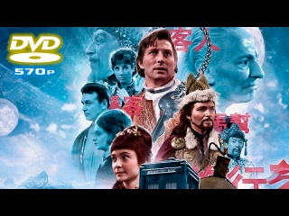 |
|---|---|
Субтитры: Русские {Елена Гордеева} | 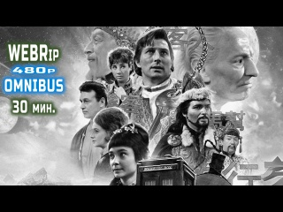 |
Субтитры: Русские и Английские | 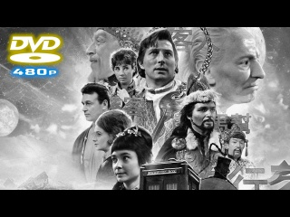 |
Субтитры: только Русские | 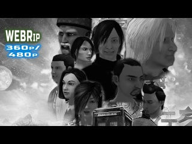 |
Субтитры: только Русские | 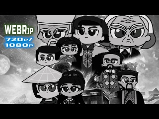 |
Субтитры: отсутствуют | 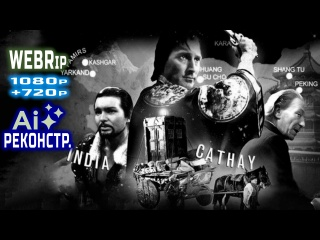 |
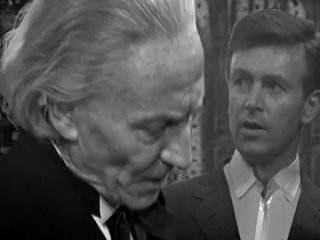 эп.1 - Крыша мира, Josh Snares | 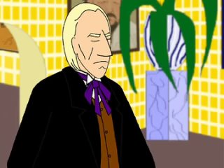 эп.1 - Крыша мира, Neil Smith |
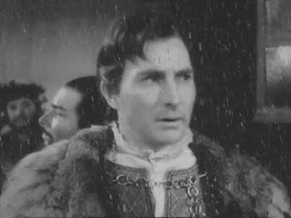 эп.1 - Крыша мира, Отрывок-Караван (AL REVIEWS WHO) | 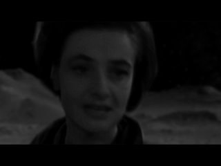 эп.2 - Поющие пески, Отрывок-Тайны небес ver.1 (Josh Snares) |
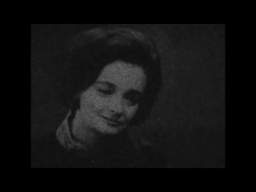 эп.2 - Поющие пески, Отрывок-Тайны небес ver.2 (Josh Snares) | 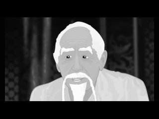 эп.7 - Убийца в Пекине, Отрывок-Игра в нарды (Conga Line Monkey) |
| 1. Крыша мира 2. Поющие пески 3. Пять сотен глаз 4. Стена лжи 5. Всадник из Шанду 6. Могучий хан Хубилай 7. Убийца в Пекине | Все 7 эпизодов утеряны * Имеется ч/б реконструкция и цветная от Loose Cannon * Официальная объединенная укороченная до 30 мин. ч/б реконструкция |
|---|
| | |
«Марко Поло» переносит героев в XIII век: ТАРДИС ломается в Гималаях, и Доктор с командой присоединяются к каравану путешественника. Марко Поло хочет подарить загадочную будку хану Хубилаю — это ставит героев перед трудным выбором. В пути команда сталкивается с интригами при дворе и опасностями пустыни, раскрывая колорит эпохи без фантастических угроз. Серия стала первым масштабным «историческим приключением» сериала и показала, как Доктор меняет ход событий, почти не вмешиваясь напрямую.
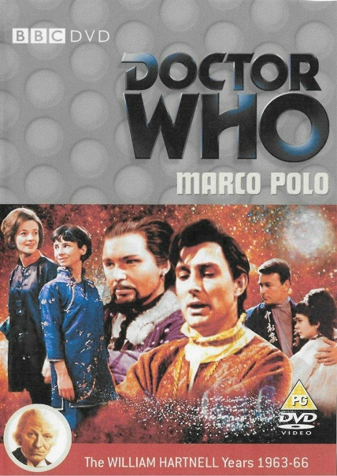  DVD - 30 января 2006 официальная реконструкция * Версия в нашей группе | 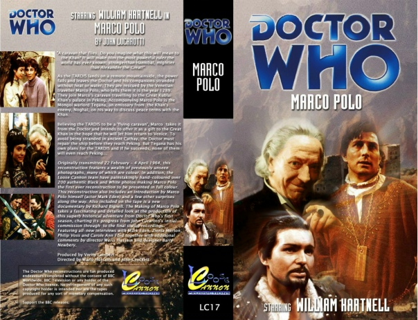 Реконструкция в цвете от Loose Cannon * Версия в нашей группе |
|---|
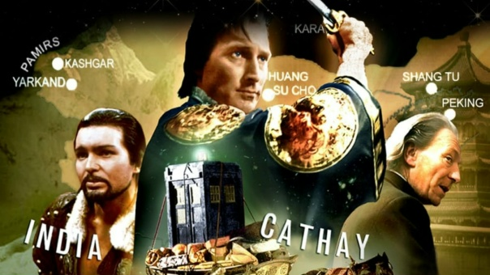
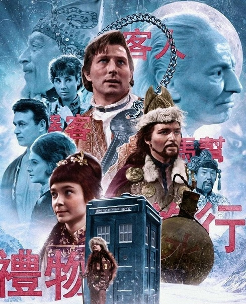